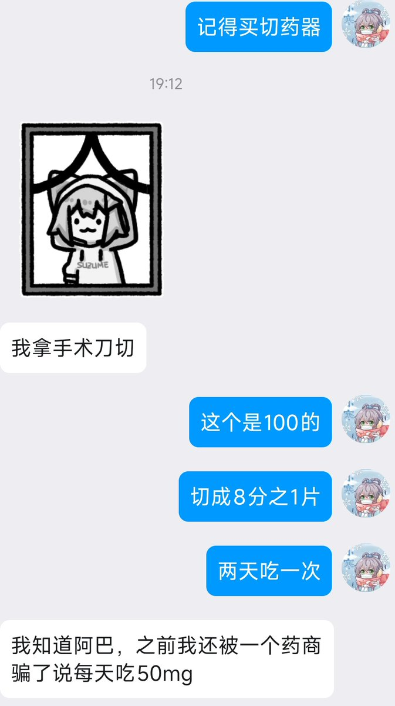

如果出现每两天吃一次12.5毫克醋酸环丙孕酮，仍然没有将睾酮指标压缩到压缩到女性区间的最高值以下（＜3.01nmol/l）的情况
那正确的做法应当是提高雌激素的摄入，而非增加醋酸环丙孕酮的摄入。
因每个人体质不同，对雌激素和孕激素的吸收效果也不一样，在醋酸环丙孕酮摄入不超过10毫克的基础上，每个人口服的雌激素剂量范围可在2至6毫克不等。也有口服吸收效果较差，需要更换雌二醇凝胶，或者雌二醇凝胶和口服联用的情况。（针剂一般在口服和皮下吸收效果都较差的情况下才进行使用）
在雌激素摄入足够的情况下，所有超过10毫克／每天的醋酸环丙孕酮剂量都是无效的
而超量摄入醋酸环丙孕酮的副作用巨大，包括肝脏毒性，血栓，泌乳素超标，抑郁症，维生素B12缺乏，疲倦，骨密度下降，骨质疏松风险


那正确的做法应当是提高雌激素的摄入，而非增加醋酸环丙孕酮的摄入。
因每个人体质不同，对雌激素和孕激素的吸收效果也不一样，在醋酸环丙孕酮摄入不超过10毫克的基础上，每个人口服的雌激素剂量范围可在2至6毫克不等。也有口服吸收效果较差，需要更换雌二醇凝胶，或者雌二醇凝胶和口服联用的情况。（针剂一般在口服和皮下吸收效果都较差的情况下才进行使用）
在雌激素摄入足够的情况下，所有超过10毫克／每天的醋酸环丙孕酮剂量都是无效的
而超量摄入醋酸环丙孕酮的副作用巨大，包括肝脏毒性，血栓，泌乳素超标，抑郁症，维生素B12缺乏，疲倦，骨密度下降，骨质疏松风险

醋酸环丙孕酮（色普龙）一般的服药剂量是每两天吃一次12.5毫克，平均每天6.25毫克
最多最多不超过每天12.5毫克
2025年了，还有人搁这每天50毫克的吃
真厉害！ https://t.co/f85TgGlLfh
最多最多不超过每天12.5毫克
2025年了，还有人搁这每天50毫克的吃
真厉害！ https://t.co/f85TgGlLfh